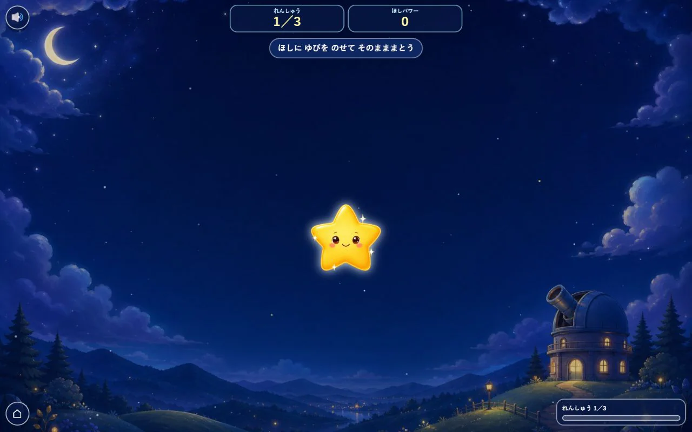

このゲームについて
空を動き回る星を選び、指やマウスを星に合わせたまま進みます。星ごとに動き方が違うため、画面上の位置を見ながら操作します。
遊び方
追いかける星を選び、星に触れたまま動きに合わせて指やマウスを動かします。練習で操作を試してから始められます。
ゲーム中に行うこと
- 動く星を目で追う
- 星の位置に合わせて指やマウスを動かす
ここではゲーム中の活動を説明しています。能力の向上や、特定の効果・改善を保証するものではありません。

空を動き回る星を選び、指やマウスを星に合わせたまま進みます。星ごとに動き方が違うため、画面上の位置を見ながら操作します。
追いかける星を選び、星に触れたまま動きに合わせて指やマウスを動かします。練習で操作を試してから始められます。
ここではゲーム中の活動を説明しています。能力の向上や、特定の効果・改善を保証するものではありません。